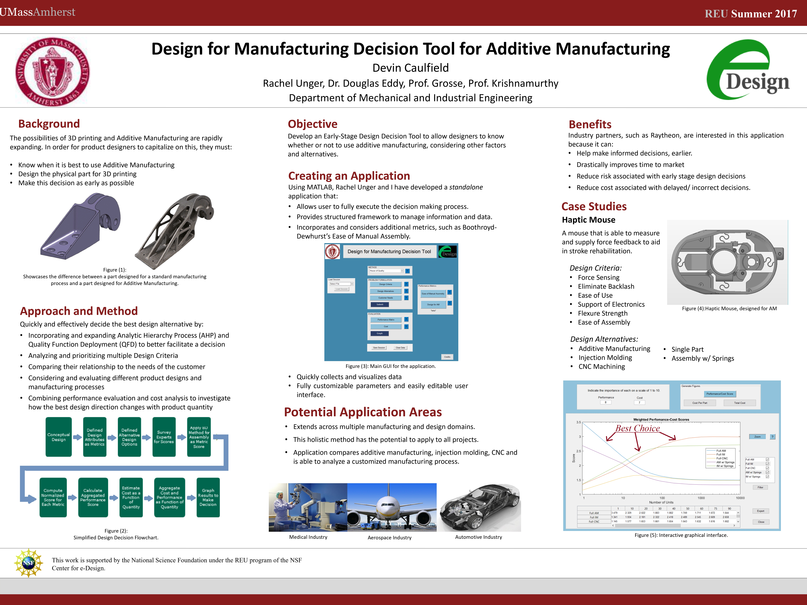

Objective
The capabilities of Additive Manufacturing are rapidly expanding. In order for product designers to capitalize on this, they must:
- Know when it's best to use Additive Manufacturing.
- Design the part's geometry for 3D printing.
- Make this decision as early as possible.
Case Study
Haptic Feedback Enabled Computer Mouse
Compared the cost-benefit of manufacturing with traditional
CNC, Injection Molding and Additive Manufacturing. Using DFMA
principles, Quality Functional Deployment and Cost-Benefit
Analysis to determine the ideal manufacturing process as a
function of production quantity.

Results & Outcomes
Developed a holistic, robust MATLAB GUI Application to determine the optimal Cost-Benefit as a function of quantity, showcasing the inflection points.
Application deployed at Raytheon.
